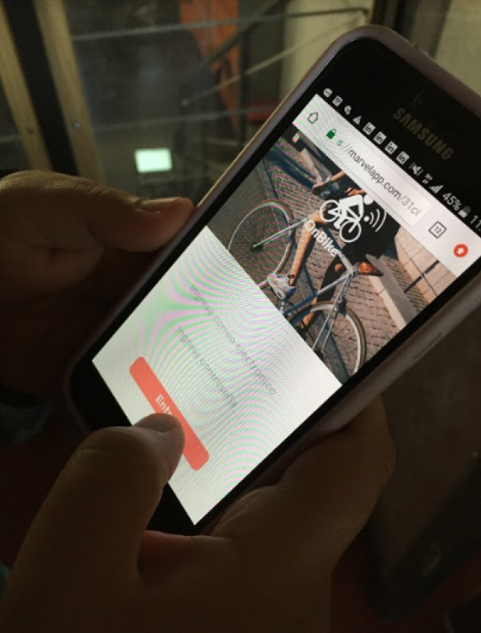

On Bike
OBJETIVOS
Aplicación móvil que tiene como propuesta mejorar la experiencia del ciclista. La infraestructura de las ciclovías es un gran problema para ellos. Después de una investigación, a lo que realmente apuntaron, es a la falta de educación vial, los automovilistas no los respetan, la personas andan por las ciclovías y los mismos ciclistas no se respetan entre ellos. Muchos han tenido accidentes por aproximación con autos o con personas, por lo que me llevó a pensar en una solución para que esto disminuya.
BENCHMARK
Se realizó un proceso de análisis comparativo de otras apps en las que se destacan las ventajas y desventajas de los elementos para traducir los resultados de la investigación en buenas prácticas.

GUIS DE ENTREVISTA
En esta ocación realicé entrevistas telefónicas a personas que viajan todos los dias en bicicleta, fueron entrevistas previamente agendadas guardando los audios
Lo que saque de esta información es que para las personas realmente es un tema andar por las calles sin seguridad, necesitan una solcución, una ayuda para poder sentirse mas protegidos. Acá está la información recopilada de la entrevista.

También se realizó una encuesta vía web, donde los resultados arrojaron practicamente lo mismo que la entrevista anterior

MAPA DE EMPATIA
Para saber que experimenta el usuario al momento de andar por la calle en su bicicleta, cuales son sus necesidades, realicé el mapa de empatía, que estudia las variables básicas:
- lo que ve
- lo que dice o hace
- lo que escucha
- lo que piensa o siente
Una vez definida la información, se hace un análisis con otras dos variables:
- esfuerzo
- resultado

CUSTOMER JOURNEY MAP
En esta parte se pudo identificar lo que les gusta y lo que no, lo que les molesta y lo que les da miedo. Es muy importante saber que están pensado o que están sintiendo los usuarios, porque así les podemos dar una solución a sus problemáticas.
PROPUESTA DE VALOR
Para poder sacar la propuesta de valor, nos planteamos las preguntas principales e hipotesis de una posible solución. Y así poder empezar con un producto.
Como propuesta de valor tenemos:
- Generar alerta para sentirse seguro.
- Llegar a su destino sin problemas.
- Tener seguimiento de rutas.
- Tener una opción en caso de peligro.
ESTRUCTURA DEL CONTENIDO
Ahora que sabemos cual es la problemática, podemos empezar con la estructura del contenido.
SKETCH
Ya que tenemos una estructura, se idear y empezar a realizar los primeros bocetos de la aplicación móvil.

Cuando realicé los testeos de estos sketches, iteré al menos 3 veces para entregarles a los usuarios la información clara como lo estaban pidiendo.
TESTEO FINAL
En este paso se le dio a los usuarios unas tareas para que realizaran , las que concluyeron con bastante éxito. Lo que tuve que modificar fueron un par de elementos como el de retroceder la página y cambiar el color de botones. Se vieron bastantes conformes, fue testeado con 2 de los usuarios que entreviste al comienzo. Encontraron que la aplicación es útil, ya que tomó justo el problema que a ellos tanto los acompleja, que son los accidentes por aproximación.
CONCLUSIÓN
En conclusión, este trabajo me encanto y lo encontré muy interesante, porque me pude poner en las problemáticas diarias que sufren los ciclistas y sentir que los puedo ayudar con estas pequeñas ideas pero que al momento de aplicarlas son grandes soluciones.
PARA VER EL TRABAJO COMPLETO HAZ CLICK ACA